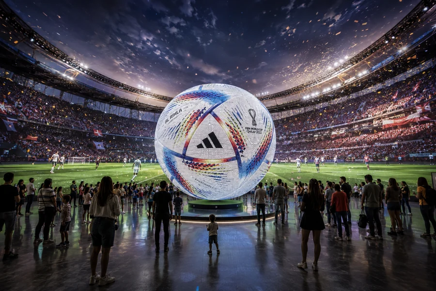

Название главы
Подзаголовок
Абзац основного текста: колонка ограничена по ширине, чтобы строка читалась.
Название · версия


Vision document · версия 0.1
Играй. Исследуй. Возвращайся.
Статус документа: основа для согласования. Не является техническим заданием.
НачатьМяч – проводник.
Главный герой – человек.
Абзац основного текста: колонка ограничена по ширине, чтобы строка читалась.
Мысль, которую нужно вынести из абзаца.
Короткое пояснение в одну-две строки.
Короткое пояснение в одну-две строки.
Короткое пояснение в одну-две строки.